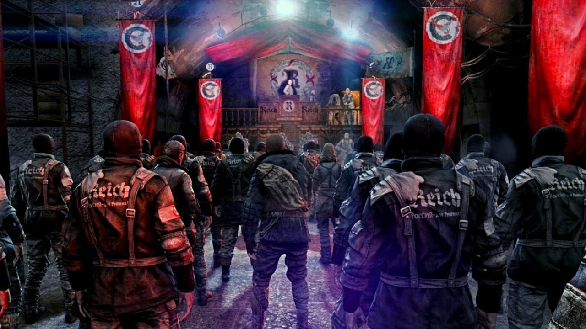

•4-й Рейх• |
|---|
|
Националистическое государство Московского метрополитена, одно из ведущих. Расположено на пересечении трёх веток метро: Таганско-Краснопресненской, Замоскворецкой и Серпуховско-Тимирязевской. Русские нацисты, заботящиеся о чистоте русской крови и отправляющие в концентрационные лагеря всех, кто не соответствует идеалу «настоящего человека». Девиз Четвёртого Рейха: «РОССИЯ — ДЛЯ РУССКИХ!» Когда двери в Метро герметично закрылись, среди простых обывателей нашлись радикальные расисты-националисты, приобретшие в довоенное время навыки «партизанской борьбы» (благодаря чему они и изучали военное дело, приобретали навыки стрельбы и взрывчатки). Увидев, как закрываются двери, им — тем немногим, стало понятно, что началась война. Люди стали сколачиваться в группировки по этническому, классовому и религиозному признаку. Одна из таких была сформирована правыми активистами, которые решили защищать только русскую нацию. Используя агитационную систему и «боевой опыт», который был получен в «мирное время», националисты смогли закрепиться на станции «Пушкинская», уничтожив на территории всех нерусских и просто тех, кто им мешал. Информация о новом режиме быстро облетела всё метро, в котором нашлось много сторонников националистического режима. Люди стали приходить с других станций и тянуться к безопасности и спокойствию, чего так не хватало в первые годы после войны. |